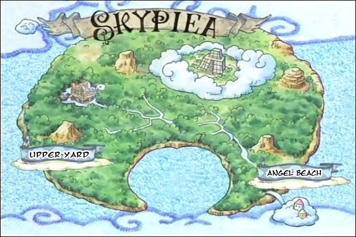

เกาะแห่งท้องฟ้า หรือ สกายเปีย

เรือตกจากฟ้ากับพบเบาะแสเกาะท้องฟ้า จึงไปสืบเกาะใกล้ๆ ที่ชื่อจายา พอถามก็ถูกขำ พอไปอีกด้านของเกาะพบกับทายาทของโนแลนด์จอมโกหก(นิทานของนอร์ทบลู)ทราบการไปเกาะท้องฟ้า ทางรัฐบาลโลกจัดประชุมหา 1 ใน 7 เทพโจรสลัดคนใหม่แทน พวกหนวดดำส่งสารจะทำผลงานคือล่าพวกหมวกฟางแต่ล้มเหว พวกหมวกฟางไปถึงเกาะท้องฟ้า หวังหาเมืองขุมทองในตำนาน แต่ไปพัวพันกับสงครามของแชนเดียร์กับชาวสกายเปีย ที่เบื้องหลังคือการละเล่นของพวกบริก้านำโดยเทพคุมกฏทั้ง 4 กับก็อดเอเนล ผู้อ้างตัวคือเทพ เพราะพลังผลปีศาจ ผลโกโรโกโร (สายฟ้า) หวังได้ทองนำมาขับเคลื่อนเป็นพลังให้เรือเดินทางไปดวงจันทร์ พอครบกำหนดทุกฝ่ายต่อต้านเอเนล เอเนลคิดทำเกาะท้องฟ้าพินาศ ลูฟี่จึงต้องสู้ตัดสินกับเคาะระฆังทองคำ เพื่อให้เสียงส่งไปถึงพวกคริกเก็ตให้ทราบว่าเมืองขุมทองมีอยู่จริง กับหาขุมทองไปในตัวสำเร็จ พอสิ้นสุดลงก็นำสมบัติที่เป็นทองคำกับนำเรือลงสู่ทะเลสีฟ้าเพื่อกลับไปผจญภัยต่อ